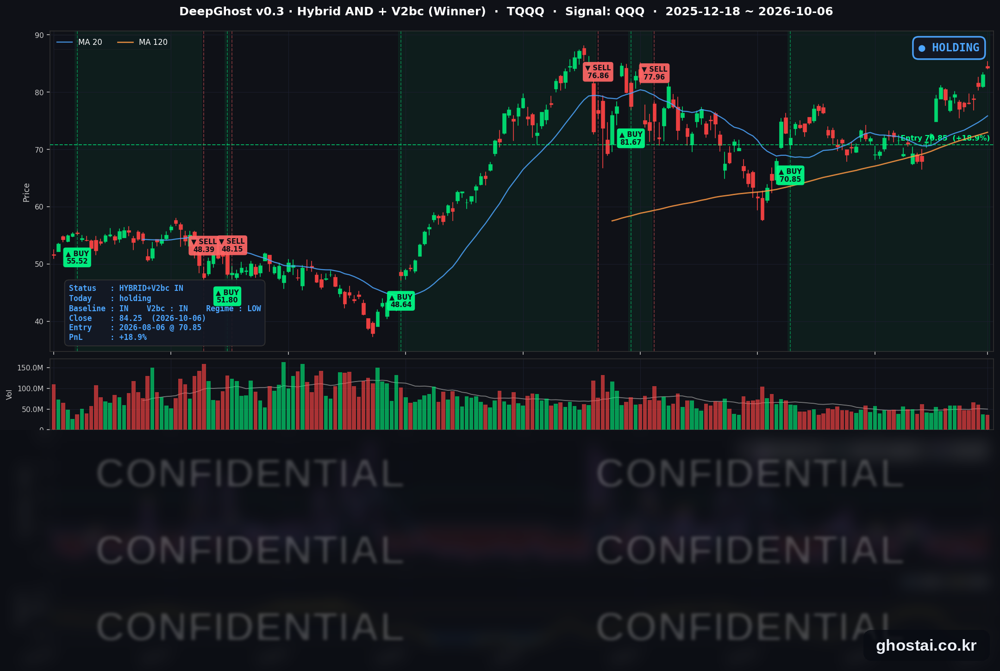

S&P500도 사상 최고치 달성
· Ghost.AI 데일리 리포트
👻 매일 시그널과 히스토리를 홈페이지에서 한눈에 → www.ghostai.co.kr
회원 페이지 안내 — 회원 가입하시면 커버리지 전 종목의 원본 시그널과 분석 레포트를 매일 확인하실 수 있습니다. 회원 페이지는 블로그·유튜브보다 먼저 업데이트됩니다. 선착순 100명을 모집하고 있으며, 이메일과 필명만으로 가입하실 수 있고 서비스 사용료는 받지 않습니다. 가입 신청 후 운영자 승인을 거쳐 이용하실 수 있습니다.
S&P 500이 0.58% 오른 7,818.93으로 처음 7,800 위에서 마감해 8월 13일 이후 처음 사상 최고 종가를 경신했습니다. 나스닥 종합은 이틀 연속, 나스닥100(QQQ)은 3거래일 연속 사상 최고 종가를 기록했습니다. 전일 2002년 이후 최고 종가였던 10년물 금리는 4.2bp 내린 5.269%로 마감했고, 구글이 컨스텔레이션 에너지와 원전 전력 계약을 맺으면서 발전·전력 설비주가 크게 올랐습니다. TQQQ는 1.36% 올랐고, 전략 수익률은 +18.91%로 8월 6일 진입 이후 가장 높아졌습니다.
📊 오늘의 매매 신호
| 항목 | 내용 |
|---|---|
| 오늘 할 일 | ✅ 아무것도 안 해도 됩니다 |
| 포지션 상태 | 📈 TQQQ 보유 중 (IN POSITION) |
| 매수 진입일 | 2026-08-06 (43거래일째) |
| 진입가 → 현재가 | $70.85 → $84.25 |
| 현재 포지션 수익 | +18.91% |
TQQQ 시그널 — IN POSITION
현재 상태: 매수 포지션 유지 중 | 이번 포지션 수익 +18.91%

QQQ가 +0.46% 오르면서 TQQQ는 +1.36% 오른 84.25달러로 마감했습니다. 전략의 평가수익률은 전 거래일 +17.32%에서 +18.91%로 늘어 8월 6일 진입 이후 가장 높습니다. 오늘 새 신호는 없었고, 모델 기준으로 매도 신호까지의 여유는 전일과 비슷합니다. QQQ는 3거래일 연속 사상 최고 종가를 기록했지만, TQQQ 종가는 사상 최고 종가(6월 2일, 87.22달러)보다 3.41% 낮습니다.
8월 6일 진입 이후 10년물 금리는 4.670%에서 5.269%로 약 60bp 올랐고, 같은 기간 QQQ 종가도 714.65달러에서 759.66달러로 6.3% 올랐습니다. 하루 단위로 보면 방향이 달랐습니다. 이 기간 10년물이 3bp 넘게 오른 19거래일에 QQQ는 평균 -0.17%, 3bp 넘게 내린 9거래일에는 평균 +0.78%였습니다. 표본이 각각 19일·9일로 작아 참고 수준입니다. 모델은 금리 자체가 아니라 나스닥100의 가격 흐름으로 판단하며, 이번 주 국채 입찰·FOMC 의사록과 다음 주 CPI가 금리 방향을 정할 일정입니다.
오늘 미국 시장 — 시황 요약
지수 마감
| 지수 | 종가 | 등락률 | 사상 최고 종가 대비 |
|---|---|---|---|
| S&P 500 | 7,818.93 | +0.58% | 사상 최고 |
| 나스닥 종합 | 27,599.79 | +0.45% | 사상 최고 |
| 다우존스 | 51,521.28 | +0.49% | -5.20% (8/5) |
| 러셀 2000 | 2,830.30 | -0.59% | -7.76% (8/14) |
| QQQ (나스닥100) | 759.66 | +0.46% | 사상 최고 |
| TQQQ | 84.25 | +1.36% | -3.41% (6/2) |
S&P 500은 8월 13일의 사상 최고 종가(7,798.99)를 넘어 처음으로 7,800 위에서 마감했습니다. 나스닥 종합은 이틀 연속, QQQ는 10월 2일부터 3거래일 연속 사상 최고 종가입니다. S&P 500 구성종목 493개 중 330개(66.9%)가 올랐지만, 러셀 2000은 0.59%(IWM -0.72%) 내려 대형주와 소형주의 방향이 갈렸습니다. SPY·QQQ는 상승분 대부분이 시가에서 나왔고, 정규장 중 변동은 크지 않았습니다.
국채 금리 동향
| 만기 | 수익률 | 전 거래일 대비 |
|---|---|---|
| 3개월 | 4.037% | +1.9bp |
| 2년 (재무부 공시) | 4.79% | -5bp |
| 5년 | 5.028% | -3.8bp |
| 10년 | 5.269% | -4.2bp |
| 30년 | 5.641% | -2.4bp |
10년물은 전일 5.311%(2002년 4월 이후 최고 종가)에서 4.2bp 내렸습니다. 30년물도 5.665%에서 5.641%로 내렸습니다. 이날 금리 하락을 이끈 특정 재료는 보도되지 않았고, 9월 고용 부진 이후 10월 인상 기대가 줄어든 흐름이 이어졌습니다. 오후 1시 3년물 입찰(580억 달러)은 낙찰 금리 4.932%, 응찰률 2.62배로 평균 수준이었습니다.
10년물은 여전히 올해 들어 110.6bp 오른 수준입니다. 재무부 기준 2년물과 10년물의 차이는 48bp(전일 47bp), 10년물과 3개월물의 차이는 123.2bp(전일 129.3bp)이고 역전은 없습니다. 금리에 민감한 유틸리티 28종목, 리츠 26종목, 주택건설 5종목은 모두 올랐습니다.
연준 발언 & 금리 패스
- 보우먼(Bowman) 감독 담당 부의장 (10/6): 연준의 은행 감독 조직을 12개 연은 지역 대신 5개 권역으로 재편하겠다고 밝혔습니다. 2023년 실리콘밸리은행 파산 검토에서 감독 당국이 위험을 충분히 파악하지 못했다는 결론을 배경으로 들었습니다. 금리·경기 전망에 대한 언급은 없어 통화정책과는 관련이 없습니다.
- 지난주 발언: 로건(Logan) 댈러스 연은 총재는 추가 인상이 필요할 가능성이 높다고 했고, 윌리엄스(Williams) 뉴욕 연은 총재는 서두를 필요가 없다고 했습니다.
추가 인상 가능성은 열어 두되 10월에 서두르지는 않겠다는 쪽으로 기대가 모여 시장 해석은 중립입니다. CME FedWatch 기준 10월 인상 확률은 19.4%로 1주 전(50.9%)보다 크게 낮아졌다고 보도됐습니다. 연준은 9월 16일 정책금리를 3.75~4.00%로 올렸고, 다음 FOMC는 10월 27~28일입니다. 10월 7일 공개되는 9월 회의 의사록과 10월 14일 9월 CPI가 다음 판단 자료입니다.
오늘의 핵심 이슈
- S&P 500 7,800 위 첫 마감. 금리가 내린 날 S&P 500과 나스닥 종합이 함께 사상 최고 종가를 기록했습니다. AMD는 리사 수 CEO가 대만에서 AI 칩 수요가 공급을 넘어서고 있어 2027년 공급을 크게 늘리겠다고 밝힌 뒤 2.80% 올라 사상 최고 종가로 마감했고, 엔비디아도 이틀 연속 최고 종가를 기록했습니다.
- 구글–컨스텔레이션 원전 전력 계약. 구글은 컨스텔레이션이 원전 6곳의 출력을 높여 새로 만드는 890MW를 20년간 사고, 기존 설비에서 2.7GW를 15년간 공급받기로 했습니다(합계 약 3.6GW). 컨스텔레이션은 이 증설에 43억 달러 이상을 투자합니다. 컨스텔레이션이 12.25% 올랐고 비스트라(+10.77%)·NRG(+7.02%) 등 발전사와 데이터센터 전력·시공 업체도 함께 올랐습니다. 알파벳은 0.35% 올랐습니다.
- AI 하드웨어 안에서 방향이 갈렸습니다. 마벨 테크놀로지가 투자자의 날에서 2028 회계연도 매출 목표를 200억 달러(시장 예상 182억 달러)로 제시한 뒤 시에나가 13.85%, 코닝이 6.02% 올랐습니다. 반대로 시게이트(-9.18%)와 웨스턴디지털(-6.93%)은 TDK의 하드디스크 자기헤드 사업을 두고 시게이트와 도시바가 인수 경쟁을 벌인다는 보도 뒤 내렸습니다(도시바는 부인). KLA(-4.54%)·램리서치(-3.44%) 등 반도체 장비주도 약세였습니다.
변동성 & 투자심리
VIX는 15.52에서 15.01로 3.29% 내렸습니다. CNN 공포탐욕지수는 전 거래일 43.0(공포)에서 47.3으로 올라 "중립" 구간에 들어왔습니다(1주 전 28.9, 한 달 전 45.2). 7개 구성 지표 중 정크본드 수요와 안전자산 수요는 극단적 탐욕이지만, 주가 강도와 시장 폭은 극단적 공포입니다. 지수는 최고치를 기록했지만 상승이 대형주에 집중돼 있다는 뜻입니다.
매크로 & 원자재
| 품목 | 종가 | 등락률 |
|---|---|---|
| WTI 원유 | $89.91 | +0.54% |
| 브렌트유 | $101.15 | +0.83% |
| 원유 ETF (USO) | $144.91 | +0.64% |
| 금 선물 | $4,192.70 | +0.86% |
| 금 ETF (GLD) | $382.27 | +0.72% |
- 유가: WTI·브렌트·USO가 모두 소폭 올랐습니다. G7의 비축유 1억 배럴 방출 계획과 중동산 원유 수출 회복이 공급 부담 요인으로 계속 거론되고, 미국·이스라엘과 이란의 분쟁은 이어지고 있습니다.
- 8월 무역수지: 적자가 1,056억 달러로 7월(928억 달러)보다 늘었고 시장 예상(1,020억 달러)보다 컸습니다. 2025년 3월 이후 가장 큰 적자입니다. 수입은 4,208억 달러로 사상 최대였고, AI 설비 관련 수입과 원유·금 수입이 늘었습니다.
주요 종목 동향
| 종목 | 종가 | 등락률 | 비고 |
|---|---|---|---|
| AVGO | 375.81 | +3.67% | 5거래일 +5.83% |
| AMZN | 256.29 | +1.95% | |
| NFLX | 68.69 | +1.76% | |
| MSFT | 529.30 | +0.78% | 5거래일 +4.00% |
| TSLA | 380.68 | +0.51% | 5거래일 +7.89% |
| GOOGL | 347.68 | +0.35% | 컨스텔레이션 원전 계약 |
| AAPL | 333.63 | +0.22% | |
| NVDA | 239.24 | +0.14% | 이틀 연속 사상 최고 종가 |
| QCOM | 181.03 | +0.13% | |
| META | 738.88 | -0.41% | |
| MU | 1,045.56 | -1.73% | |
| INTC | 112.50 | -3.18% | 2거래일 연속 하락 |
커버리지 12종목 중 9종목이 오르고 3종목(메타·마이크론·인텔)이 내렸습니다. 브로드컴이 3.67%로 가장 많이 올랐고, 마이크론은 저장장치 종목이 약했던 날 1.73% 내렸습니다. 인텔은 10월 5일(-2.63%)에 이어 이틀 연속 내렸습니다.
다음 일정 (미 동부시간)
- 10/7(수) 13:00 10년물 국채 입찰 (390억 달러) / 14:00 9월 FOMC 의사록 / 15:00 8월 소비자신용
- 10/8(목) 04:30 월러(Waller) 이사 연설 (경제 전망) / 08:30 신규 실업수당 청구 / 30년물 국채 입찰 (220억 달러) / 펩시코 실적
- 10/9(금) 10:00 미시간대 소비자심리 (예비)
- 이후 10/12(월) 콜럼버스 데이 — 채권 시장 휴장, 주식 시장 정상 개장 / 10/14(수) 9월 CPI·베이지북 / 10/15(목) 9월 PPI / 10/27~28 FOMC
Ghost.AI — Quantitative AI Investment
Model: DeepGhost v0.3 | Transformer-Based Deep Learning
Coverage: 13 tickers | Updated every trading day after US market close
⚠️ 본 자료는 정보 제공 목적으로만 작성되었으며 투자 권유가 아닙니다. 모든 투자의 책임은 투자자 본인에게 있습니다. 과거 성과가 미래 수익을 보장하지 않습니다.
[유의사항]
- 본 서비스는 불특정 다수를 대상으로 발행되는 단방향 정보 제공 서비스이며, 투자자 개인의 재산 상황·투자 목적·위험 선호도를 반영한 개별 투자 조언이 아닙니다.
- 고스트에이아이 주식회사는 고객과 쌍방향 의사소통(개별 상담, 맞춤형 자문 등)을 제공하지 않습니다.
- 본 콘텐츠는 투자 권유 또는 매매 주문의 청약·청약의 권유에 해당하지 않으며, 최종 투자 판단 및 그에 따른 손익의 책임은 전적으로 투자자 본인에게 있습니다.
고스트에이아이 주식회사